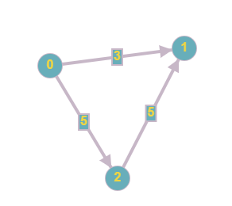
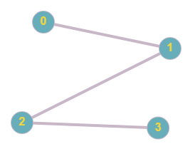
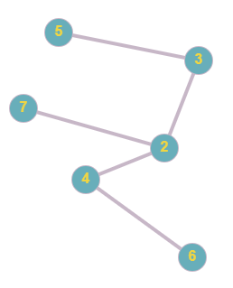

В математической теории графов и информатике граф —
это совокупность
непустого множества вершин и множества пар вершин (связей между
вершинами)

Ориентированный граф (кратко орграф) — (мульти) граф, рёбрам
которого присвоено направление. Направленные рёбра именуются также
дугами, а в некоторых источниках (Оре) и просто рёбрами.

Неориентированным графом называется множество как угодно размещенных на
плоскости, точек, некоторые из которых соединены линиями любой формы.

Связный граф — граф, содержащий ровно одну компоненту
связности. Это означает, что между любой парой вершин этого графа
существует как минимум один путь. В противном случае граф
будет называться несвязным.
связный: несвязный:
;
Степень вершины в теории графов — количество рёбер
графа , инцидентных вершине . При подсчёте степени ребро-петля
учитывается дважды.[1] Степень вершины обозначается(в западных
источниках — \deg(v)). Максимальная и минимальная степень
вершин графа G обозначаются соответственно Δ(G) и
δ(G). На рис. 1 максимальная степень равна 5, минимальная
— 0. В регулярном графе степени всех вершин одинаковы,
поэтому в данном случае можно говорить о степени графа.

Дерево [tree] — в теории графов, связный граф без циклов,
обладающий следующими основными свойствами (которые математически
эквивалентны): если за n принять число вершин (элементов
графа), то он содержит ровно n — 1 ребро, не имеет циклов;
если добавить ребро, соединяющее две несмежные вершины, то образуется
один цикл; при удалении любого ребра граф становится несвязным; каждая
пара вершин соединяется одной и только одной цепью. Исходная вершина
называется корнем, пути от нее к крайним вершинам — ветвями.
Примеры см. в статьях: Дерево игры, Дерево решений, Дерево целей.

Изоморфные графы – существует взаимно однозначное
соответствие между множествами их вершин или биекция, сохраняющая
отношение смежности.

Эйлеровым циклом в графе называется такой цикл, который содержит все
ребра и все вершины этого графа. Напомним, что, по определению, в
циклах не повторяются ребра. Таким образом, при наличии эйлерова цикла
в графе этот граф можно
Обойти по всем ребрам, пройдя каждое ребро только один раз. Граф,
обладающий эйлеровым циклом, сам называется Эйлеровым.